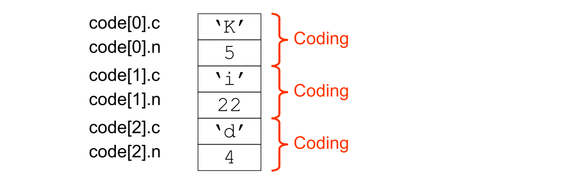

Runtime Organization¶
- Data representation (direct vs. indirect)
- Storage allocation strategies: static vs. stack dynamic
- Activation records (sometimes called frames)
- Routines and Parameter passing
Data Representation¶
Data representation: how to represent values of the source language on the target machine.
Important properties of a representation schema
- Non-confusion
- Different values of a given type should have different representations
- Uniqueness
- Each value should always have the same representation
Important issues
- Constant-size representation
- The representation of all values of a given type should occupy the same amount of space
- Direct vs indirect representation

Indirect Representation¶
Why chose indirect representation?
- Make the representation "constant size" even if representation requires different amounts of memory for different values.

Indirect vs Direct¶
- Direct representations are often preferable for efficiency
- More efficient access (no need to follow pointers)
- More efficient "storage class" (e.g stack- rather than heap allocation)
- For types with widely varying size of representations, it is almost a must to use indirect.
Notation¶
If T is a type then:
- \#[T] is the cardinality of the type (the number of possible values)
- \text{size}[T] is the size of the representation (in number of bits/bytes)
In general: if \#[T]=n then \text{size}[T]=\log_2n \text{ bits}
Primitive Types¶
Types that cannot be decomposed into simpler types. For example:
integer,boolean,charetc.
Boolean¶
2 values: true and false
\Rightarrow \#[\mathtt{boolean}]=2
\Rightarrow \text{size}[\mathtt{boolean}]=1 \text{ bit}
Possible representations

Integer¶
Typically uses one word (16, 32 or 64 bits).
\Rightarrow \#[\mathtt{integer}]=\leq 2^{16}=65536
\Rightarrow \text{size}[\mathtt{boolean}]=word\ (=16 \bits)
Modern processors use two's complement representation of integers:
Composite Types¶
- Records
- Arrays
- Variant Records or Disjoint Unions
- Pointers or References
- (Objects)
- Functions
Records¶
Example: Triangle Record Representations
1 2 3 4 5 6 7 8 9 10 11 12 | |

\Rightarrow \text{size}[\mathtt{Date}]= 3*\size{integer}=3\ words
\text{address}[\mathtt{today.y}]=\text{address}[\mathtt{today}]+0\\ \text{address}[\mathtt{today.m}]=\text{address}[\mathtt{today}]+1\\ \text{address}[\mathtt{today.d}]=\text{address}[\mathtt{today}]+2
\text{address}[\mathtt{my.dob.m}]=\text{address}[\mathtt{my.dob}]+1=\text{address}[\mathtt{my}]+2
Disjoint Unions¶
Example: Pascal variant records
1 2 3 4 5 6 | |

Assuming \size{Integer}=\size{Boolean}=1 and \size{Real}=2 then
\size{Number}=\size{Boolean}+ \max{(\size{Integer}, \size{Real})}=1+\max{(1,2)}=3
Arrays¶
Two kinds of arrays
- Static arrays: size is known at compile time
- Dynamic arrays: Number of elements is computed at run-time and sometimes may vary at run-time (Flex-arrays)
Static Arrays¶
1 2 3 | |

1 2 3 4 | |


Dynamic Arrays¶
Example: Java arrays
1 2 3 4 5 | |
1 2 | |
Possible representation:
Another possible representation:
Where to Put Data¶
3 methods
Static Allocation¶
Originally all data were global. All memory allocation was static.
Data was placed at a fixed memory address during compilation, for the entire execution of a program.
Static allocation can waste memory space.
- Fortran introduced
equivalentstatement that forces 2 variables to share memory location
In modern languages, static allocation is used for global variables and literals (constants) that are fixed in size and accessible throughout program execution.
Also used for static and extern variables in C/C++ and for static fields in C# and Java classes.
Stack Allocation¶
Recursive languages require dynamic memory allocation. Each time a recursive method is called, a new copy of local variables (frame) is pushed on a runtime stack. The number of allocations is unknown at compile-time.
A frame (or activation record) contains space for all of the local variables in the method. When the method returns, its frame is popped and the space reclaimed. Thus, only the methods that are actually executing are allocated memory space in the runtime stack. This is called stack allocation.

Frame for procedure p:

Stack Storage Allocation¶
Allocation of local variables
Example: When do the variables "exist"?:

- Procedure activation behaves like a stack (LIFO)
- Local variables "live" as long as the procedure they are declared in.
- 1+2\Rightarrow Allocation of locals on the "call stack" us a good model
Recursion¶
1 2 3 4 | |

Dynamic Link¶
Stack frames may vary in size and because the stack may contain more than just frames (e.g. registers saved across calls), dynamic link is used to point to the preceding frame:

Nested Functions/Procedures¶
1 2 3 4 5 6 | |
Functions can nest in languages like Pascal, ML and Python. How to keep track of static block structure as above?
A static link points to the frame of the method that statically encloses the current method:
An alternative is the use of a display. We maintain a set of registers which comprise the display:

Blocks¶
1 2 3 4 5 | |
We can view blocks as parameter-less procedures, and use procedure-level-frames to implement blocks.
- But because the then and else parts of the if statement above are mutually exclusive, variables in block 1 and 2 can overlay.
- This is called block-level frame as contrasted with procedure level frame

High-order Functions¶
Functions as values (first-class)
- Pass as arguments
- Return as values
- Stored into data structures
Implementation:
- A code pointer (a code address + an environment pointer)
- Called a closure
Routines¶
The assembly language equivalent of procedures
Not directly supported by language constructs, but modeled in terms of how to use the low-level machine to emulate procedures.
Behavior to emulate:
- Calling a routine and returning to the caller after completion
- Passing arguments to a called routine
- Returning a result from a routine
- Local and non-local variables
Transferring control to and from routine:
- Most low-level processors have
CALLandRETURNfor transferring control from caller to callee and back.
Transmitting arguments and return values:
- Caller and callee must agree on a method to transfer argument and return values.
- Called routine protocol
- There are many possible ways.
- Often dictated by the operating system.
Routine Protocol Examples¶
Example 1¶
Passing arguments:
- First argument in R1, second in R2, etc.
Passing return value:
- Return result (if any) in R0
This is simplistic
- What if more arguments than registers
- What if argument is larger than a register
Example 2¶
Passing arguments:
- Pass argument on top of stack
Passing of return value:
- Leave return value on stack top
Puts no boundary on number of arguments, or size of arguments.